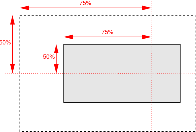

This module contains the features of CSS relating to the backgrounds of boxes on the page.
CSS is a language for describing the rendering of structured documents
(such as HTML and XML)
on screen, on paper, etc.
Status of this document
This section describes the status of this document at the time of its publication.
A list of current W3C publications
and the latest revision of this technical report
can be found in the W3C standards and drafts index.
This document was published
by the CSS Working Group
as a First Public Working Draft using the Recommendation
track.
Publication as a First Public Working Draft
does not imply endorsement by W3C and its Members.
This is a draft document
and may be updated, replaced
or obsoleted by other documents at any time.
It is inappropriate to cite this document as other than a work in progress.
Please send feedback
by filing issues in GitHub (preferred),
including the spec code “css-backgrounds” in the title, like this:
“[css-backgrounds] …summary of comment…”.
All issues and comments are archived.
Alternately, feedback can be sent to the (archived) public mailing list
www-style@w3.org.
This document was produced by a group operating under the
W3C Patent Policy.
W3C maintains a
public list of any patent disclosures
made in connection with the deliverables of the group;
that page also includes instructions for disclosing a patent.
An individual who has actual knowledge of a patent that the individual believes
contains Essential Claim(s)
must disclose the information in accordance with
section 6 of the W3C Patent Policy.
1.
Introduction
When elements are rendered according to the
CSS box model[CSS-BOX-3],
each element is either not displayed at all,
or formatted as one or more rectangular boxes.
Each box has a rectangular content area,
a band of padding around the content,
a border around the padding,
and a margin outside the border.
(The margin may actually be negative,
but margins have no influence on the background and border.)
The various areas and edges of a typical box.
(This diagram is explained in the CSS Box Model Module [CSS-BOX-3].)
The properties of this module deal with the background of the content, padding, and border areas.
If an element is broken into multiple box fragments,
box-decoration-break defines
how the borders and background are divided over the various fragments.
(An element can result in more than one fragment if it is broken
at the end of a line, at the end of a column or at the end of a page;
and continued in the next line, column or page.)
The relative stacking order of backgrounds, borders, and shadows
is given in this module.
For how these layers interact with other rendered content,
see Appendix E “Elaborate description of Stacking Contexts” in [CSS2].
1.1.
Module Interactions
This specification extends the parts related to backgrounds
of CSS Backgrounds and Borders Module Level 3 [CSS3BG].
It provides specifications for the added background-repeat-* and `background-position-*' longhands,
a new background-tbd property that allows to define the background layers excluding the color,
and adds two new values to background-clip.
In addition to the property-specific values listed in their definitions,
all properties defined in this specification
also accept the CSS-wide keywords as their property value.
For readability they have not been repeated explicitly.
2.
Defining Backgrounds
Each box has a background layer that may be fully transparent (the default),
or filled with a color and/or one or more images.
The background properties specify what color (background-color)
and images (background-image) to use,
and how they are sized, positioned, tiled, etc.
The background properties are not inherited,
but the parent box’s background will shine through by default
because of the initial transparent value on background-color.
This property specifies the background image(s) of an element.
Images are drawn with the first specified one on top (closest to the user)
and each subsequent image behind the previous one.
The property’s value is given as a comma-separated list
of <bg-image> values where
A value of none
counts as a background image layer but draws nothing.
An image that is empty (zero width or zero height),
that fails to download,
or that cannot be displayed
(e.g., because it is not in a supported image format)
likewise counts as a layer but draws nothing.
When setting a background image,
authors should also specify a background-color
that will preserve contrast with the text
for when the image is unavailable.
For accessibility reasons,
authors should not use background images
as the sole method of conveying important information.
See Web Content Accessibility Guideline F3[WCAG20].
Images are not accessible in non-graphical presentations,
and background images specifically
might be turned off in high-contrast display modes.
Note: Stylistic foreground images can be provided in CSS
with the content property.
Semantically-important foreground images should be provided
in the document markup, e.g. with the <img> tag in HTML.
Note:Media fragments
can be used to display a portion of an image.
The CSS Images module
will provide fallback syntax for image formats
and include additional controls for image display.
Some examples specifying background images:
html { background-image: url("marble.svg") }
p { background-image: none }
div { background-image: url(tl.png), url(tr.png) }
main { background-image: radial-gradient(at bottom right, transparent, white); }
Implementations may optimize
by not downloading and drawing images that are not visible
(e.g., because they are behind other, fully opaque images).
These properties specify whether and how background images are tiled
along one axis after they have been
sized and positioned.
repeat
The image is repeated in the given direction as often as needed
to cover the background painting area.
space
The image is repeated in the given direction as often as will fit
within the background positioning area without being
clipped and then the repeated images are spaced out to fill the area.
The first and last images touch the edges of the area.
If the background painting area is larger than the background positioning area,
then the pattern repeats to fill the background painting area.
The value of background-position for this direction is ignored,
unless there is not enough space for two copies of the image in this direction,
in which case only one image is placed and
background-position determines its position in this direction.
round
The image is repeated in the given direction as often as will fit
within the background positioning area.
If it doesn’t fit a whole number of times,
it is rescaled so that it does.
See the formula under background-size.
If the background painting area is larger than the background positioning area,
then the pattern repeats to fill the background painting area.
no-repeat
The image is placed once and not repeated in the given direction.
Unless one of the axes is set to no-repeat,
the whole background painting area will be tiled,
i.e., not just one vertical strip and one horizontal strip.
Example(s):
body {
background: white url("pendant.png");
background-repeat-y: repeat;
background-position: center;
}
The effect of repeat-y:
One copy of the background image is centered,
and other copies are put above and below it
to make a vertical band behind the element.
If background images are specified,
this property specifies whether they are
fixed with regard to the viewport (fixed)
or scroll along with the box (scroll)
or its contents (local).
The property’s value is given as a comma-separated list
of <attachment> keywords where
The background is fixed with regard to the viewport.
In paged media where there is no viewport,
a fixed background is fixed with respect to
the page box
and therefore replicated on every page.
Note: There is only one viewport per view.
Even if an box is a scroll container,
a fixed background doesn’t move with the box.
The background is fixed with regard to the box itself
and does not scroll with its contents.
(It is effectively attached to the box’s border.)
Even if the image is fixed,
it is still only visible when it is in the background painting area of the box
or otherwise unclipped.
(See § 4 Backgrounds of Special Elements for the cases when
background images are not clipped.)
Thus, unless the image is tiled, it may be invisible.
This example creates an infinite vertical band
that remains “glued” to the viewport when the document is scrolled.
body {
background: red url("pendant.gif");
background-repeat: repeat-y;
background-attachment: fixed;
}
Note: User agents that do not support fixed backgrounds
(for example due to limitations of the hardware platform)
will ignore declarations
with the keyword fixed.
For example:
body {
/* For all UAs: */
background: white url(paper.png) scroll;
/* For UAs that do fixed backgrounds: */
background: white url(ledger.png) fixed;
}
h1 {
/* For all UAs: */
background: silver;
/* For UAs that do fixed backgrounds: */
background: url(stripe.png) fixed, white url(ledger.png) fixed;
}
For example, with a value pair of 0% 0%,
the upper left corner of the image is aligned with
the upper left corner of, usually, the box’s padding edge.
A value pair of 100% 100% places
the lower right corner of the image
in the lower right corner of the area.
With a value pair of 75% 50%,
the point 75% across and 50% down the image
is to be placed at the point 75% across and 50% down the area.

Diagram of the meaning of background-position: 75% 50%.
A length value gives a fixed length as the offset.
For example, with a value pair of 2cm 1cm,
the upper left corner of the image is placed
2cm to the right and 1cm below
the upper left corner of the background positioning area.
Computes to 50% (left 50%) for the horizontal position
if the horizontal position is not otherwise specified,
or 50% (top 50%) for the vertical position if it is.
The following background shorthand declarations use keywords
to set background-position to the stated percentage values.
body { background: url("banner.jpeg") right top } /* 100% 0% */
body { background: url("banner.jpeg") top center } /* 50% 0% */
body { background: url("banner.jpeg") center } /* 50% 50% */
body { background: url("banner.jpeg") bottom } /* 50% 100% */
In the example below, the (single) image is placed
in the lower-right corner of the viewport.
Background positions can also be relative to other corners than the top left.
For example, the following puts the background image
10px from the bottom and 3em from the right:
Note: A pair of keywords can be reordered,
while a combination of keyword and length or percentage cannot.
So center left is valid while 50% left is not.
If three or four values are given,
then each <length-percentage> represents an offset
and must be preceded by a keyword,
which specifies from which edge the offset is given.
For example, background-position: bottom 10px right 20px
represents a 10px vertical offset up from the bottom edge
and a 20px horizontal offset leftward from the right edge.
If three values are given,
the missing offset is assumed to be zero.
Positive values represent an offset inward
from the edge of the background positioning area.
Negative values represent an offset outward
from the edge of the background positioning area.
The following declarations give the stated (horizontal, vertical)
offsets from the top left corner:
background-position: left 10px top 15px; /* 10px, 15px */
background-position: left top ; /* 0px, 0px */
background-position: 10px 15px; /* 10px, 15px */
background-position: left 15px; /* 0px, 15px */
background-position: 10px top ; /* 10px, 0px */
background-position: left top 15px; /* 0px, 15px */
background-position: left 10px top ; /* 10px, 0px */
The specified value and computed value of the <bg-position> type
serialize exactly as defined in [CSS-VALUES-4] for <position>.
For 3-value productions
(which are not valid in <position>),
the specified value serialization
is identical to the equivalent 4-value syntax
except that the omitted offset remains omitted.
The background is painted within (clipped to)
the specified box of the element.
text
The background is painted within (clipped to)
the intersection of the border box
and the geometry of the text including any decorations and emphasis marks in the element and its in-flow and floated descendants.
The text color has no effect on the painting of the background.
border-area
The background is clipped to the area painted by the border,
taking border-width and border-style into account but ignoring any transparency introduced by border-color.
If both border-area and text are specified,
the background is painted within (clipped to) the union of these two areas.
This property determines the background positioning area:
the area within which any background images are positioned.
For elements rendered as multiple box fragments
(e.g., inline boxes on several lines, boxes on several pages),
specifies which boxes box-decoration-break[CSS-BREAK-3] operates on
to determine the background positioning area(s).
padding-box
The position is relative to the padding box.
(For single boxes 0 0 is the upper left corner of the padding edge,
100% 100% is the lower right corner.)
An auto value for one dimension
is resolved by using the image’s natural aspect ratio
and the size of the other dimension,
or failing that, using the image’s natural size,
or failing that, treating it as 100%.
If both values are auto
then the natural width and/or height of the image
should be used, if any,
the missing dimension (if any) behaving as auto
as described above.
If the image has neither natural size,
its size is determined as for contain.
Negative values are invalid.
Here are some examples.
The first example stretches the background image
independently in both dimensions
to completely cover the content area:
The second example stretches the image
so that exactly two copies fit horizontally.
The aspect ratio is preserved:
p {
background-image: url(tubes.png);
background-size: 50% auto;
background-origin: border-box;
}
This example forces the background image to be 15 by 15 pixels:
p {
background-size: 15px 15px;
background-image: url(tile.png);
}
This example uses the image’s natural size.
Note that this is the only possible behavior in CSS level 1 and 2.
body {
background-size: auto; /* default */
background-image: url(flower.png);
}
The following example rounds the height of the image to 33.3%,
up from the specified value of 30%.
At 30%, three images would fit entirely and a fourth only partially.
After rounding, three images fit exactly.
The width of the image is 20% of the background positioning area width
and is not rounded.
If background-repeat is round
for one (or both) dimensions,
there is a second step.
The UA must scale the image in that dimension (or both dimensions)
so that it fits a whole number of times in the background positioning area.
In the case of the width (height is analogous):
If X ≠ 0 is the width of the image after step one
and W is the width of the background positioning area,
then the rounded width
X' = W / round(W / X)
where round() is a function that returns the nearest natural number
(integer greater than zero).
If background-repeat is round for one dimension only
and if background-size is auto for the other dimension,
then there is a third step:
that other dimension is scaled so that the original aspect ratio is restored.
In this example the background image is shown at its natural size:
In the following example,
the background is shown with a width of approximately 3em:
scaled so that it fits a whole number of times in the width of the background.
The height is scaled proportionally to keep the original aspect ratio:
In the following example, the background image is shown
with a width of 3em and a height that is either
the height corresponding to that width at the original aspect ratio
or slightly less:
In the following example,
the background image is shown with a height of approximately 4em:
scaled slightly so that it fits a whole number of times in the background height.
The width is the approximately the width that corresponds to
a 4em height at the original aspect ratio:
scaled slightly so that it fits a whole number of times
in the background width.
div {
background-image: url(image5.png);
background-repeat: round;
background-size: auto 4em;
}
If the background image’s width or height resolves to zero,
this causes the image not to be displayed.
(The effect is the same as if it had been a transparent image.)
The background-tbd property is a shorthand property
that sets all the same properties as the background shorthand
except for background-color,
allowing authors to easily declare and position background images
while letting background-color cascade through independently.
The name of this property is discussed in
issue 9083.
This example sets two background layers later in the cascade.
By using background-tbd, the previously set background-color
won’t be overridden.
p {background-color: green;}
p {background-tbd:url(a.png) top left,url(b.png) top left no-repeat;}
This example tries to set the background color in addition to
the background image. But for that to work,
background needs to be used instead of background-tbd.
So the background-tbd declaration will be dropped.
p {background:url(pass.png) green;/* valid */
background-tbd: url(fail.png) red;/* invalid */}
2.12.
Backgrounds Shorthand: the background property
If one <visual-box> value is present,
then it sets both background-origin and background-clip to that value.
However, if a value is set that is only valid in background-clip,
then it sets background-clip to that value and background-origin to border-box.
If two <visual-box> values are present,
then the first sets background-origin and the second background-clip.
In the first rule of the following example, only a value for
background-color has been given and the
other individual properties are set to their initial values. In the
second rule, many individual properties have been specified.
body { background: red }
p { background: url("chess.png") 40% / 10em gray
round fixed border-box; }
The following example shows how a both
a background color (#CCC) and a background image (url(metal.jpg))
are set.
The image is rescaled to the full width of the element:
E { background: #CCC url("metal.jpg") top left / 100% auto no-repeat}
Another example shows equivalence:
div {
background: padding-box url(paper.jpg) white center;
}
div {
background-color: white;
background-image: url(paper.jpg);
background-repeat: repeat;
background-attachment: scroll;
background-position: center;
background-clip: padding-box;
background-origin: padding-box;
background-size: auto auto;
}
The following declaration with multiple, comma-separated values
background: url(a.png) top left no-repeat,
url(b.png) center / 100% 100% no-repeat,
url(c.png) white;
is equivalent to
background-image: url(a.png), url(b.png), url(c.png);
background-position: top left, center, top left;
background-repeat: no-repeat, no-repeat, repeat;
background-clip: border-box, border-box, border-box;
background-origin: padding-box, padding-box, padding-box;
background-size: auto auto, 100% 100%, auto auto;
background-attachment: scroll, scroll, scroll;
background-color: white;
3.
Layering Multiple Background Images
The background of a box can have multiple
background image layers.
The number of layers is determined by
the number of comma-separated values in the background-image property.
Note that a value of none still creates a layer.
Each of the background images is sized, positioned, and tiled
according to the corresponding value in the other background properties.
The lists are matched up from the first value:
excess values at the end are not used.
If a property doesn’t have enough comma-separated values
to match the number of layers,
the UA must calculate its used value
by repeating the list of values until there are enough.
For example, this set of declarations:
background-image: url(flower.png), url(ball.png), url(grass.png);
background-position: center center, 20% 80%, top left, bottom right;
background-origin: border-box, content-box;
background-repeat: no-repeat;
has exactly the same effect as this set,
with the extra position dropped
and the missing values for background-origin and background-repeat
filled in (emphasized for clarity):
background-image: url(flower.png), url(ball.png), url(grass.png);
background-position: center center, 20% 80%, top left;
background-origin: border-box, content-box, border-box;
background-repeat: no-repeat, no-repeat, no-repeat;
The first image in the list is the layer closest to the user,
the next one is painted behind the first, and so on.
The background color, if present,
is painted below all of the other layers.
Note: The border-image properties
can also define a background image,
which, if present, is painted on top of
the background layers created by the background properties.
4.
Backgrounds of Special Elements
The document canvas
is the infinite surface over which the document is rendered. [CSS2]
Since no element corresponds to the canvas,
in order to allow styling of the canvas
CSS propagates the background of the root element
(or, in the case of HTML, the <body> element)
as described below.
However, if the element whose background would be used for the canvas
is display: none,
then the canvas background is transparent.
If the canvas background is not opaque,
the canvas surface below it shows through.
The texture of the canvas surface is UA-dependent
(but is typically an opaque white).
4.1.
The Canvas Background and the Root Element
The background of the root element becomes the canvas background
and its background painting area extends
to cover the entire canvas.
However, any images are sized and positioned relative to the root element’s box
as if they were painted for that element alone.
(In other words, the
background positioning area
is determined as for the root element.)
The root element does not paint this background again,
i.e., the used value of its background is transparent.
4.2.
The Canvas Background and the HTML <body> Element
For documents whose root element is
an HTML HTML element
or an XHTML html element [HTML]:
if the computed value of background-image on the root element
is none and its background-color is transparent,
user agents must instead propagate
the computed values of the background properties
from that element’s first
HTML BODY or XHTML body
child element.
The used values
of that BODY element’s background properties
are their initial values,
and the propagated values are treated
as if they were specified on the root element.
It is recommended that authors of HTML documents specify the canvas background
using the BODY element
rather than the HTML element.
According to these rules, the canvas underlying the following HTML document
will have a “marble” background:
<!DOCTYPE html PUBLIC '-//W3C//DTD HTML 4.0//EN'
>
<html>
<head>
<title>Setting the canvas background</title>
<style type="text/css">
body { background: url("http://example.org/marble.png") }
</style>
</head>
<body>
<p>My background is marble.</p>
</body>
</html>
The ::first-line pseudo-element
is like an inline-level element
for the purposes of the background
(see section 5.12.1 of [CSS2]).
That means, e.g., that in a left-justified first line,
the background does not necessarily extend
all the way to the right edge.
In addition to the many contributors to the [CSS1], [CSS2],
and [CSS3BG] predecessors to this module,
the editors would like to thank
Tab Atkins,
and Håkon Wium Lie
for their suggestions and feedback specifically for this Level 4.
Privacy Considerations
No new privacy considerations have been reported on this specification.
Security Considerations
No new security considerations have been reported on this specification.
Conformance
Document conventions
Conformance requirements are expressed with a combination of
descriptive assertions and RFC 2119 terminology. The key words “MUST”,
“MUST NOT”, “REQUIRED”, “SHALL”, “SHALL NOT”, “SHOULD”, “SHOULD NOT”,
“RECOMMENDED”, “MAY”, and “OPTIONAL” in the normative parts of this
document are to be interpreted as described in RFC 2119.
However, for readability, these words do not appear in all uppercase
letters in this specification.
All of the text of this specification is normative except sections
explicitly marked as non-normative, examples, and notes. [RFC2119]
Examples in this specification are introduced with the words “for example”
or are set apart from the normative text with class="example",
like this:
This is an example of an informative example.
Informative notes begin with the word “Note” and are set apart from the
normative text with class="note", like this:
Note, this is an informative note.
Advisements are normative sections styled to evoke special attention and are
set apart from other normative text with <strong class="advisement">, like
this:
UAs MUST provide an accessible alternative.
Tests
Tests relating to the content of this specification
may be documented in “Tests” blocks like this one.
Any such block is non-normative.
Conformance classes
Conformance to this specification
is defined for three conformance classes:
A style sheet is conformant to this specification
if all of its statements that use syntax defined in this module are valid
according to the generic CSS grammar and the individual grammars of each
feature defined in this module.
A renderer is conformant to this specification
if, in addition to interpreting the style sheet as defined by the
appropriate specifications, it supports all the features defined
by this specification by parsing them correctly
and rendering the document accordingly. However, the inability of a
UA to correctly render a document due to limitations of the device
does not make the UA non-conformant. (For example, a UA is not
required to render color on a monochrome monitor.)
An authoring tool is conformant to this specification
if it writes style sheets that are syntactically correct according to the
generic CSS grammar and the individual grammars of each feature in
this module, and meet all other conformance requirements of style sheets
as described in this module.
Partial implementations
So that authors can exploit the forward-compatible parsing rules to
assign fallback values, CSS renderers must
treat as invalid (and ignore
as appropriate) any at-rules, properties, property values, keywords,
and other syntactic constructs for which they have no usable level of
support. In particular, user agents must not selectively
ignore unsupported component values and honor supported values in a single
multi-value property declaration: if any value is considered invalid
(as unsupported values must be), CSS requires that the entire declaration
be ignored.
Implementations of Unstable and Proprietary Features
Once a specification reaches the Candidate Recommendation stage,
non-experimental implementations are possible, and implementors should
release an unprefixed implementation of any CR-level feature they
can demonstrate to be correctly implemented according to spec.
To establish and maintain the interoperability of CSS across
implementations, the CSS Working Group requests that non-experimental
CSS renderers submit an implementation report (and, if necessary, the
testcases used for that implementation report) to the W3C before
releasing an unprefixed implementation of any CSS features. Testcases
submitted to W3C are subject to review and correction by the CSS
Working Group.